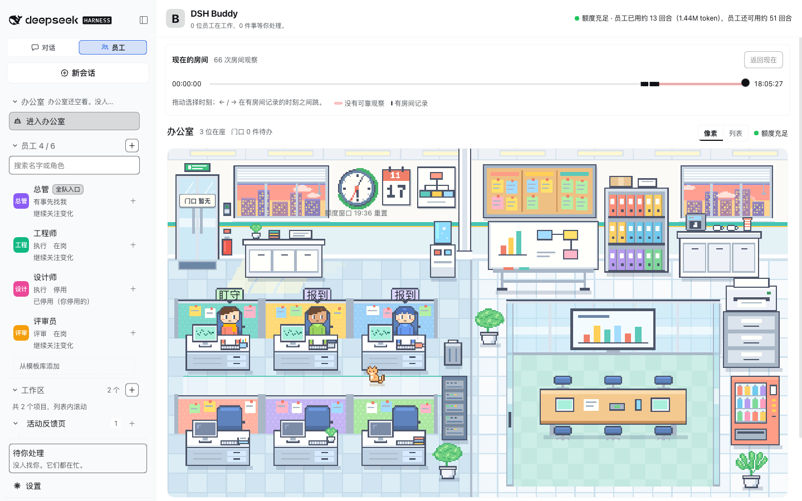
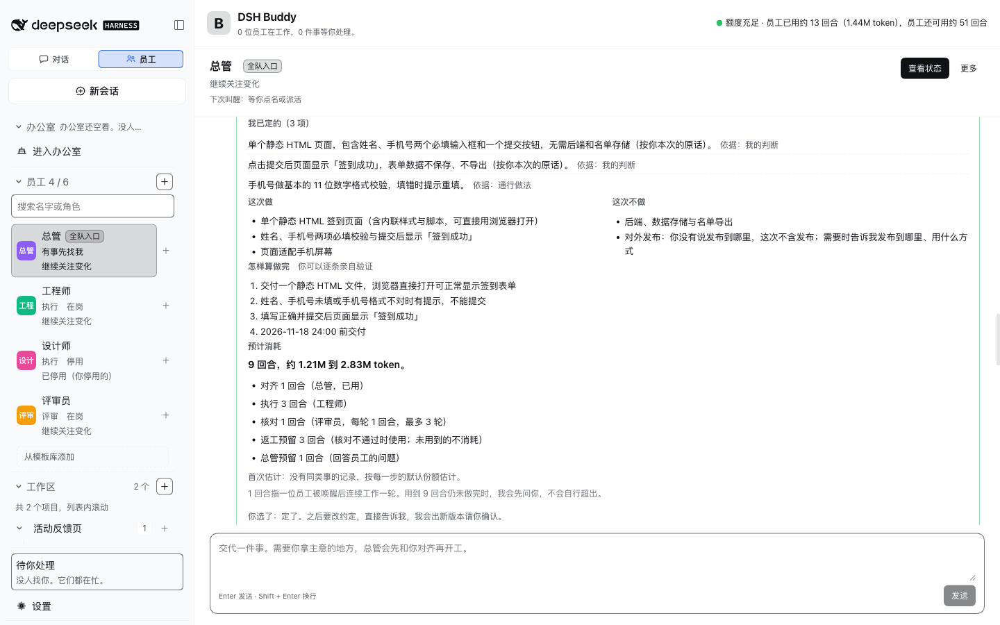
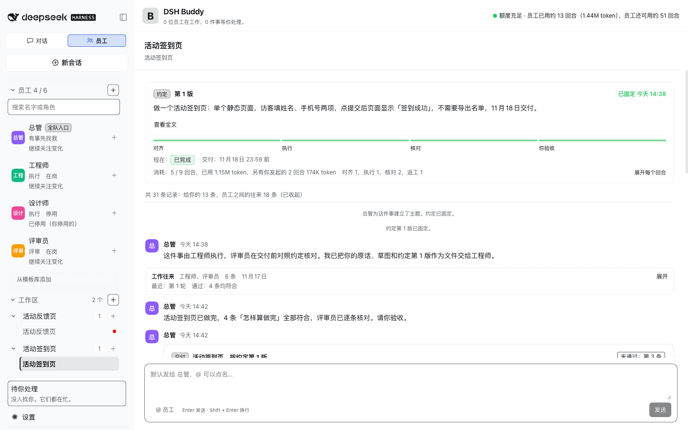
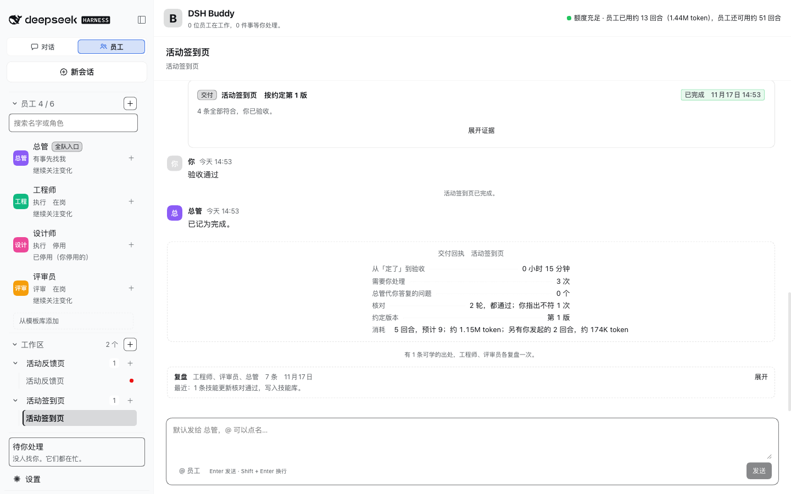
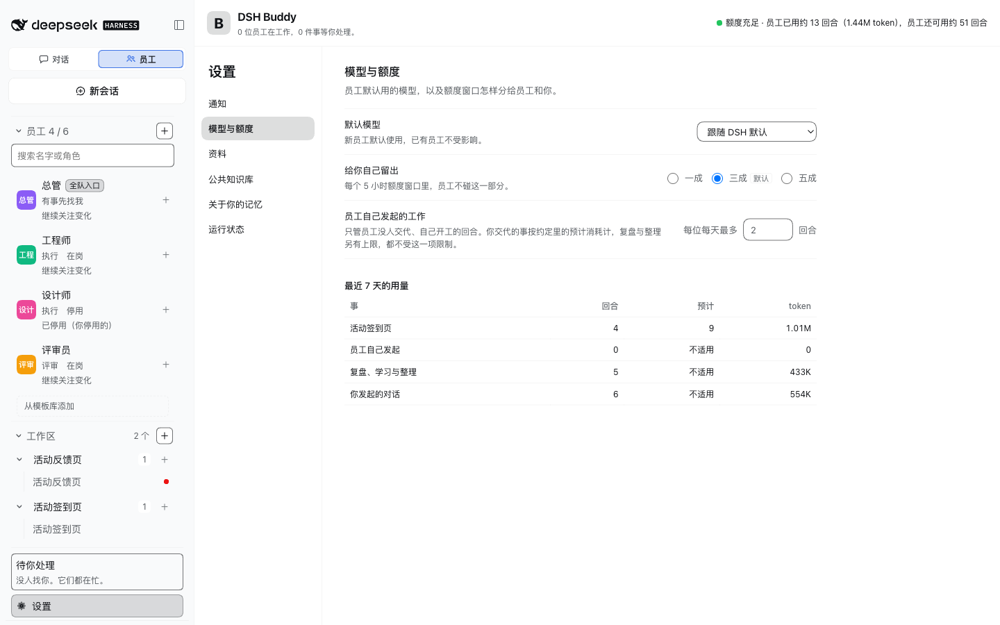
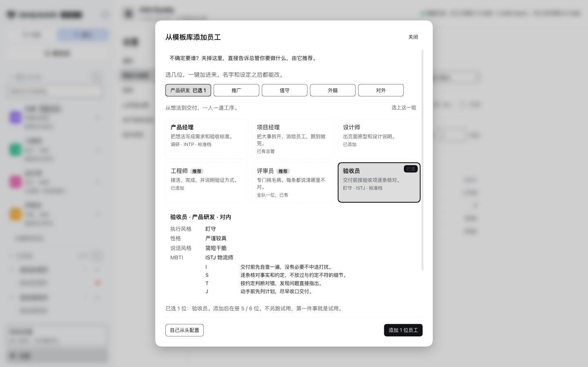

DeepSeek Harness 桌面版插件，给一个人的公司（OPC）
你的 OPC 专业团队
一支看得见、管得住的 AI 团队。
你对总管说一件事，总管先和你对齐「约定」，写明怎样算做完和预计消耗；你点「定了」才开工。员工执行，交回的结果逐条核对之后，再交给你验收。谁在忙，办公室里看得到；花了多少，每件事都有记录。
安装：复制包名，粘贴到 DSH 的插件页
@tyr1105/dsh-buddy
DSH → 插件 → 添加插件 → 粘贴包名。完全退出并重新打开 DSH，在左栏顶部的「对话 / 员工」切换里点「员工」。
- 插件免费，MIT 开源
- 使用你 DSH 里现有的模型和额度
- 员工的数据保存在你电脑上的 ~/AgentHub
- 需要 macOS 和 DSH 桌面版 0.2.x（0.2.1 起）
看得见：插件里的办公室
员工在做什么，小人就显示什么：工作、排队、盯守、待确认、受阻、休息。点一位员工，右侧列出他今天每段时间在做什么；整间办公室可以倒回到今天的任意时刻。

- 工位上方的牌子
写明这位员工现在的状态。 - 顶部的时间轴
拖动它，整间办公室倒回到今天的任意时刻。 - 顶栏的额度行
本额度窗口里员工已用的回合和 token。 - 空工位
办公室一共六个工位，在册最多 6 位（含总管）。 - 门口
显示等你处理的待办件数。 - 挂钟下方的额度窗口
写明当前额度窗口的重置时间。
截图数据来自 2026-11-17 的一次真实试用：三位员工做一个活动签到页。
管得住：先约定，再核对，对外要批准
开工、交付和对外动作，各有一次要你确认的环节。
开工之前，先有约定
需要你拿主意的事，总管先给出约定卡：一句话复述、草图、待你定的事项（每项附建议）、总管已定的事项、这次做与不做、怎样算做完、预计消耗。你点「定了」之前不开工；之后要改，总管出新的一版请你确认。
交付之前，逐条核对
一件事交给一位员工执行。交回时每条「怎样算做完」都附证据，由评审员逐条核对，最多三轮；改动小的事由总管核对。你验收时指出哪条不符，只返工这一条。三轮仍不过时，总管告诉你卡在哪、试过什么，并给出几个办法和建议。
对外和收不回来的动作，先问你
员工在自己的文件夹、共享文件夹和项目文件夹里运行命令、写文件，不逐条请你批准，写入范围由 DSH 的沙箱限制。推送代码、发布上线、发消息、安装软件、向外部网址发送数据这类对外和收不回来的动作，要你批准。审批卡第一行是一句说明，写明费用、能否撤回、批准之后会发生什么；原始命令默认收起。
要你处理的事，集中在一处
需要你确认、验收或批准的事，都集中在「待你处理」，也可以在那里直接写一句要修改的地方。执行中，约定能回答的问题由总管直接答复，不打扰你。

一件事从交代到验收
每件事有自己的主题页，写明约定、进度、在等谁和消耗。总管右侧栏的「在办的事」列出每件事的状态、在等谁、交付时间和已用回合。
- 对总管说一件事在总管的对话里写下要做的事。一步能答或需求明确的小事，总管直接安排。
- 看约定卡，点「定了」点「定了」之前不会开工。要改哪里，直接在输入框里写，总管出新的一版。
- 员工执行，逐条核对交回时每条「怎样算做完」都附证据，评审员逐条核对。
- 交给你验收，出交付回执没有问题点「验收通过」；哪条不符，只返工这一条。


花多少，每件事都有记录
预计、已用和给自己留出的额度，在约定、主题页、顶栏和设置里都能看到。
开工前有预计消耗
约定里写明预计的总回合数、按步骤拆分和 token 区间，返工预留算在内。将要超出预计时先问你一次（追加回合、缩小范围或暂停），你没有决定时不会自行超出。
做完有交付回执
回执写明实际用了多少回合和 token，你发起的回合另计。验收之后的复盘回合不计入这件事的回执，计在设置页用量表的「复盘、学习与整理」一行。
给自己留出额度
每个 5 小时的额度窗口，默认给你自己留出三成，员工不使用这一部分；比例可以在设置里改。顶栏写出本额度窗口里员工已用的回合和 token，这是按额度窗口统计的估算，可能与各件事回执的合计不一致。
员工自己开工有上限
员工没人交代、自己开工的工作，每位每天默认最多 2 回合。设置页列出最近 7 天按事统计的用量。

说过的话不用说第二遍
你的要求和做过的事，会被记下来，并且可以查看、更正和撤销。
已记住的要求
你说一句以后都适用的要求，总管当场回一句「已记住」，写明内容和适用范围，可以撤销。之后对齐时，约定里「我已定的」会引用这条规矩并写明出处。设置页的「关于你的记忆」列出系统记住的全部内容，可以更正或删除。
离开一段时间再回来
离开 8 小时以上再打开时，总管的对话里有一段离开期间的摘要：每件事的变化、共用了多少回合和 token、通知过你几次。
员工的技能库
一件事核对退回过、或你指出过不符时，验收之后相关员工各复盘一次，把经过核对的经验写进自己的技能库。技能库每一句都注明出处，保留历史版本，可以回退。
成果放到指定位置
约定里可以写明发布到你电脑上的一个文件夹（第一级限于桌面、文稿、下载等几个文件夹）。发布前单独请你批准。
15 个现成的角色
名字、性格、说话风格、模型和技能，加进来之后都能改。第一次打开时团队里只有总管；总管推荐不超过 3 位员工，你可以改名、换一位或不要某一位。

产品研发
6 个角色
- 产品经理把想法写成需求和验收标准。
- 项目经理把大事拆开，派给员工，跟到做完。总管就是用这个模板建的；团队里已有总管时不能再添加。
- 设计师出页面原型和设计说明。
- 工程师推荐接活、完成，并说明验证方式。
- 评审员推荐专门挑毛病，每条都说清哪里不对。全队只能有一位。
- 验收员交付前按验收项逐条核对。
推广
2 个角色
- SEO 专员查关键词，改标题和页面内容。
- 视频策划写推广视频的脚本和分镜。
值守
2 个角色
- 研究员代查资料、盯守网页，结论附出处。
- 巡检员盯守日志与定时任务，异常时通知。
外脑
3 个角色
- 追问者连续追问，把含糊的地方问清楚。
- 鬼点子很多专出不按常理的点子。
- 员工教练看员工做得怎么样，给改进建议。
对外
2 个角色
- 发言人写公告、发版说明和对用户的回复。
- 市场专员看竞品和用户，定卖点和推广计划。
办公室一共六个工位，在册最多 6 位（含总管）。也可以从头配一位自己的员工：名字、执行风格、性格、说话风格、性格（MBTI）、模型、岗位技能、员工说明，一页填完。总管和盯守类员工另有自主节奏可选，其余员工只在总管安排或你点名时工作。
三步开始
-
装上
在 DSH 的插件页点「添加插件」，粘贴包名。完全退出 DSH，再重新打开，在左栏顶部的「对话 / 员工」切换里点「员工」。
@tyr1105/dsh-buddy -
回答总管的三个问题，确认组队卡
总管问：主要想让团队做哪类事、手上有没有已经在做的项目、希望多久被打扰一次。随后给出组队卡，推荐不超过 3 位员工。确认后员工直接在岗，不另外试跑。
-
对总管说第一件事
在总管的对话里写下要做的事。需要你拿主意的地方，总管先给出约定卡；点「定了」之后才开工。
先把话说在前面
现在的边界
- 现在不接聊天软件，不操作浏览器，没有手机端，也没有由你设定的定时任务。需要这些功能时，可以选用 DSH 生态里提供它们的其他插件。
- DSH 关着或电脑休眠时，团队不工作。
- 只支持 macOS；DSH 版本要 0.2.1 及以上、0.3.0 以下。
- 总管的回复由模型生成，提到某件事的状态时仍可能与实际不符；以主题页的进度行为准。
- 约定卡草图里的圆圈数字由模型标注，可能没有对应到正确的待你定事项。
- 审批和沙箱还有已知缺口：对外动作按程序名识别，改名、起别名或写进脚本里的调用拦不住；读网页不经审批。不要让员工读来路不明的网页，也不要把敏感资料放在他们够得着的地方。细节写在 GitHub 的说明里。
和同类插件有什么不同？
DSH Buddy 的重心是「一件事从交代到验收」这条路径可见、可控：开工之前有约定，交付之前有核对，花费有预计、有回执，状态看得见。它现在不接聊天软件，不操作浏览器，没有手机端，也没有由你设定的定时任务；需要这些功能时，可以选用 DSH 生态里提供它们的其他插件。
每件事大概花多少？
约定里有预计消耗，做完有交付回执。2026-11-17 的一次真实试用：团队有工程师、设计师、评审员三位员工，用真实模型做一个活动签到页，由工程师执行、评审员核对，中间退回返工一次。到验收为止共 7 个回合、约 132 万 token。交付回执的消耗一行原文：「5 回合，预计 9；约 1.15M token；另有你发起的 2 回合，约 174K token」。验收之后，工程师和评审员各自复盘，另用 5 个回合、约 43 万 token。这部分不计入这件事的回执，计在用量表的「复盘、学习与整理」一行。全程没有出现审批卡。
需要我一直盯着吗？
需要你确认、验收或批准的事，都集中在「待你处理」。执行中，约定能回答的问题由总管直接答复，不打扰你。离开 8 小时以上再打开时，总管的对话里有一段离开期间的摘要。
数据会外传吗？
员工的数据保存在你电脑上的 ~/AgentHub，卸载插件不会删除。员工使用你 DSH 里现有的模型和额度。向外部网址发送数据要你批准；读网页不经审批，内容有可能被放进网址带出去，所以不要让员工读来路不明的网页。
从上一版升级要做什么？
更新插件后，完全退出并重新打开 DSH，新版本才会生效。数据仍在 ~/AgentHub，升级时自动迁移，不会丢失。
OPC 是什么？
一人公司（One Person Company），即只有一个人的公司。DSH Buddy 给这样的使用者用。
不想用了怎么办？
在 DSH 里移除这个插件即可，命令写在 GitHub 的说明里。员工的数据保存在 ~/AgentHub，卸载不会删除。
装好之后，对总管说第一件事
总管先和你对齐约定，你点「定了」才开工。